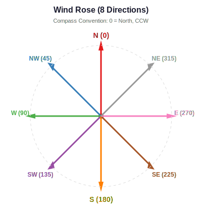

Mathematical Foundations¶
This chapter describes the mathematical theory behind OMRAT’s risk calculations. The methodology is based on the IWRAP framework (Friis-Hansen 2008), which separates maritime risk into three main components: drifting risks, powered risks, and ship-ship collisions.
Risk Assessment Framework¶
The fundamental equation for maritime accident frequency is:
Where:
\(N_A\) = number of accident candidates (geometric encounters)
\(P_C\) = causation probability (probability that an encounter leads to an actual accident)
The accident candidates \(N_A\) are computed purely from geometry and traffic patterns – how many ships pass close enough to an obstacle or another ship that a collision could occur if no evasive action is taken.
The causation probability \(P_C\) accounts for human and technical factors – the probability that the crew fails to detect and avoid the danger.
compute/basic_equations.py:5 – get_Fcoll()
Three Risk Categories¶
OMRAT models three categories of maritime risk:
Drifting risk – Ships that lose propulsion (blackout) and drift under the influence of wind and current into obstacles.
Powered risk – Ships under power that fail to navigate correctly, either by sailing directly into an obstacle (Category I) or failing to turn at a waypoint (Category II).
Ship-ship collision risk – Encounters between vessels that could result in contact, including head-on, overtaking, crossing, and bend collisions.
Each category is described in detail in its own chapter:
Drifting Risk Calculations – Drifting risk calculations
Ship-Ship Collision Calculations – Ship-ship collision calculations
Powered Grounding and Allision – Powered grounding and allision calculations
Causation Factors¶
Causation factors represent the probability that a geometric encounter leads to an actual accident. These are empirically derived from historical accident data.
Collision Type |
IALA Default |
Fujii (1974) |
Notes |
|---|---|---|---|
Head-on collision |
\(4.9 \times 10^{-5}\) |
\(4.9 \times 10^{-5}\) |
Traffic separation helps |
Overtaking collision |
\(1.1 \times 10^{-4}\) |
\(1.1 \times 10^{-4}\) |
|
Crossing collision |
\(1.3 \times 10^{-4}\) |
\(1.2 \times 10^{-4}\) |
Pedersen value |
Bend collision |
\(1.3 \times 10^{-4}\) |
– |
Pedersen value |
Powered grounding |
\(1.6 \times 10^{-4}\) |
\(1.6 \times 10^{-4}\) |
|
Allision (structure) |
\(1.9 \times 10^{-4}\) |
\(1.9 \times 10^{-4}\) |
|
Drifting |
\(1.0\) |
– |
No avoidance (powerless) |
Adjustment factors can modify the base causation probabilities:
Ferry/passenger vessels: \(\div 20\) (two navigators, familiar route)
Pilot on board: \(\div 3\) (COWIconsult)
Poor visibility (3–10%): \(\times 2\)
Poor visibility (10–30%): \(\times 8\)
omrat_utils/causation_factors.py – CausationFactors (manages causation factor values)
Lateral Traffic Distribution¶
Vessel positions across a shipping lane are modelled as a mixture of up to three normal distributions plus one uniform distribution:
Where:
\(z\) = lateral distance from the leg centreline (metres)
\(w_i\) = weight of normal component \(i\) (all weights sum to 1)
\(\mu_i, \sigma_i\) = mean and standard deviation of component \(i\)
\(w_u\) = weight of the uniform component
\(U(z; a, b)\) = uniform distribution between \(a\) and \(b\)
These distributions can be fitted automatically from AIS data or entered manually. The distribution parameters are stored per segment and per direction.
geometries/drift/distribution.py:66 – get_distribution_width()
Coordinate Systems¶
OMRAT uses two coordinate reference systems:
WGS84 (EPSG:4326) – Geographic coordinates (longitude, latitude) for storage and display
UTM – Projected coordinates (metres) for distance calculations
The appropriate UTM zone is determined automatically from the centroid of the study area:
Northern hemisphere uses EPSG codes 326XX; southern hemisphere uses 327XX, where XX is the zone number.
All distance-dependent calculations (drift distances, corridor widths, collision geometry) are performed in UTM coordinates to ensure metric accuracy.
geometries/drift/coordinates.py:12 – get_utm_crs() |
geometries/drift/coordinates.py:28 – transform_geometry()
Compass Angle Convention¶
OMRAT uses a nautical compass convention for wind and drift directions:
{kind=link}
Direction |
Angle |
Description |
|---|---|---|
N |
0 deg |
North (+Y in UTM) |
NW |
45 deg |
NorthWest |
W |
90 deg |
West (-X in UTM) |
SW |
135 deg |
SouthWest |
S |
180 deg |
South (-Y in UTM) |
SE |
225 deg |
SouthEast |
E |
270 deg |
East (+X in UTM) |
NE |
315 deg |
NorthEast |
To convert from compass to mathematical convention (0 deg = East, CCW):
The vector components in UTM are then:
geometries/drift/coordinates.py:45 – compass_to_vector()
References¶
Friis-Hansen, P. (2008). IWRAP MK II - Basic Modelling Principles for Prediction of Collision and Grounding Frequencies. Technical University of Denmark.
Pedersen, P.T. (1995). Collision and Grounding Mechanics. WEMT’95.
Fujii, Y. et al. (1974). Some factors affecting the frequency of accidents in marine traffic. Journal of Navigation, 27.
Talavera, A. et al. (2013). Application of Dempster-Shafer theory for the quantification and propagation of the uncertainty caused by the use of AIS data. Reliability Engineering and System Safety, 111, 95–105.
Engberg, P.C. (2017). IWRAP Mk2 v5.3.0 Manual. GateHouse A/S.